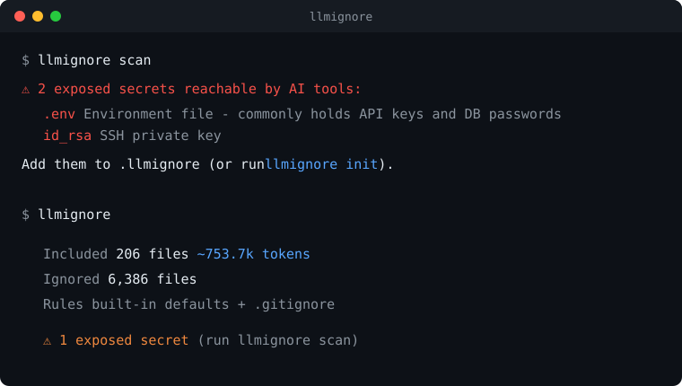

# run it, no install
npx llmignore-cli init
# or
cargo install llmignore-cli
curl -fsSL https://raw.githubusercontent.com/horiastanxd/llmignore/main/install.sh | shThe package is llmignore-cli; the installed command is llmignore.
.env, *.pem, id_rsa, .npmrc - gone from AI context by default.
Skip node_modules, dist, lockfiles, binaries. Less noise, lower cost.
sync mirrors .llmignore to .cursorignore, .aiexclude, .geminiignore and more.
Built on ripgrep's engine. Tens of thousands of files in milliseconds.
llmignore init # write a .llmignore with strong defaults
llmignore scan # any secrets currently exposed to AI? (exit 1 if yes)
llmignore sync # mirror it into .cursorignore, .aiexclude, ...
llmignore # summary: what AI sees vs what it skips